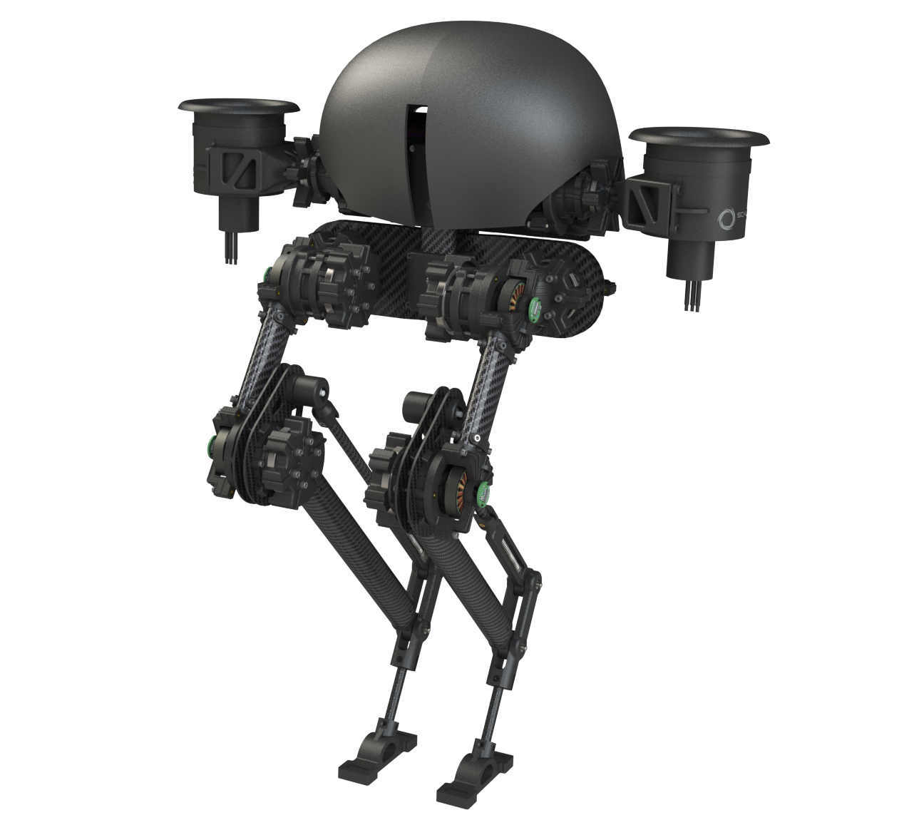
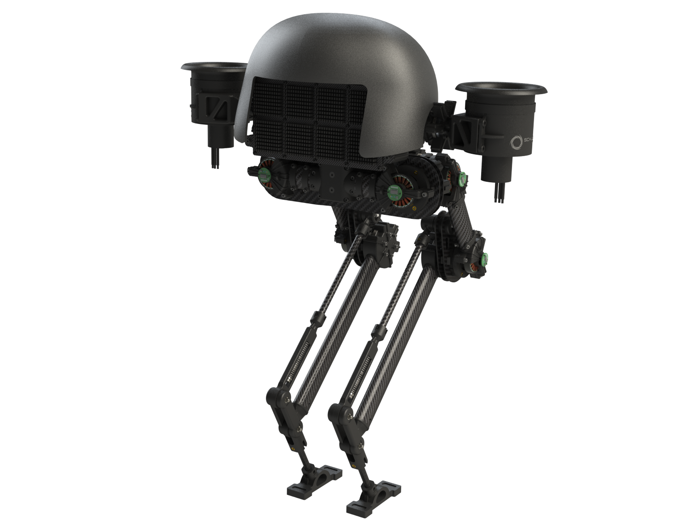
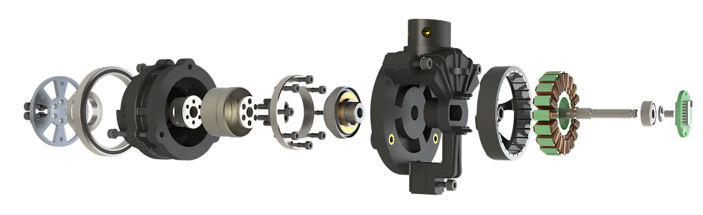
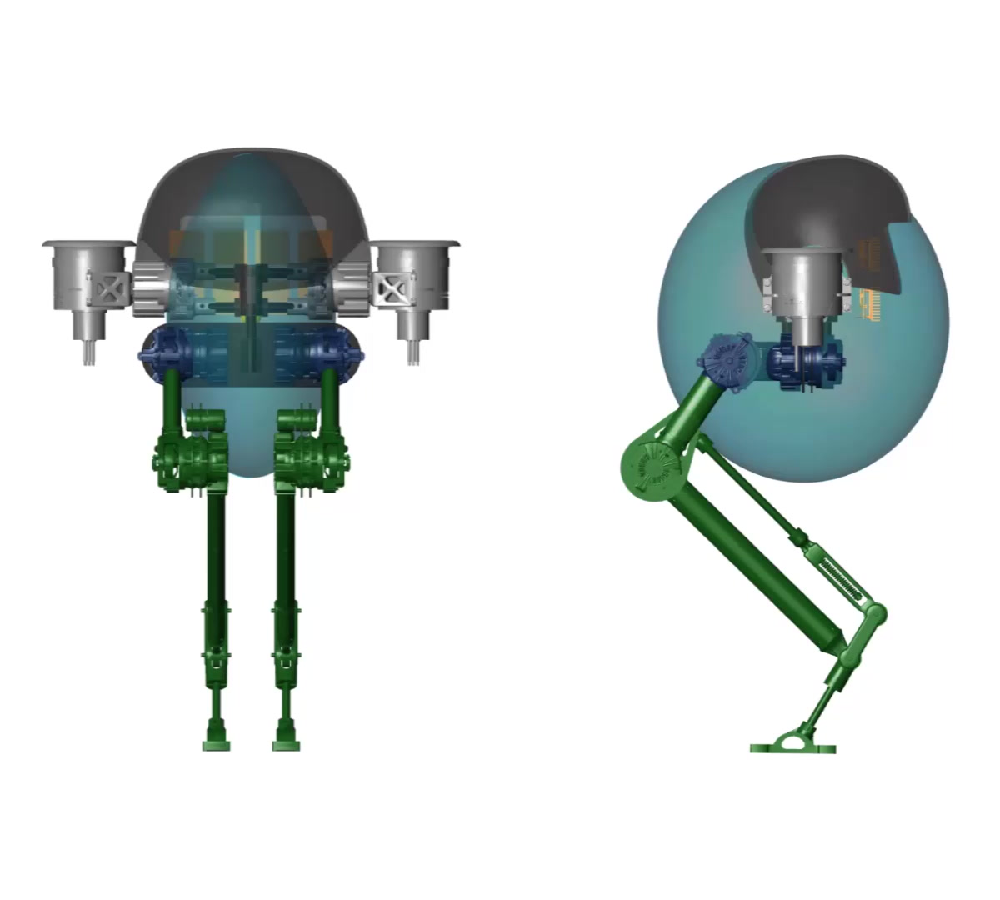
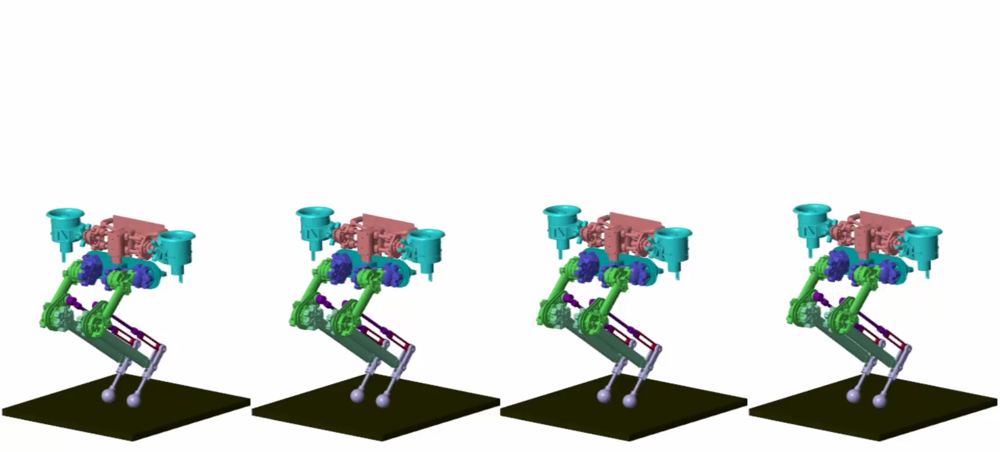
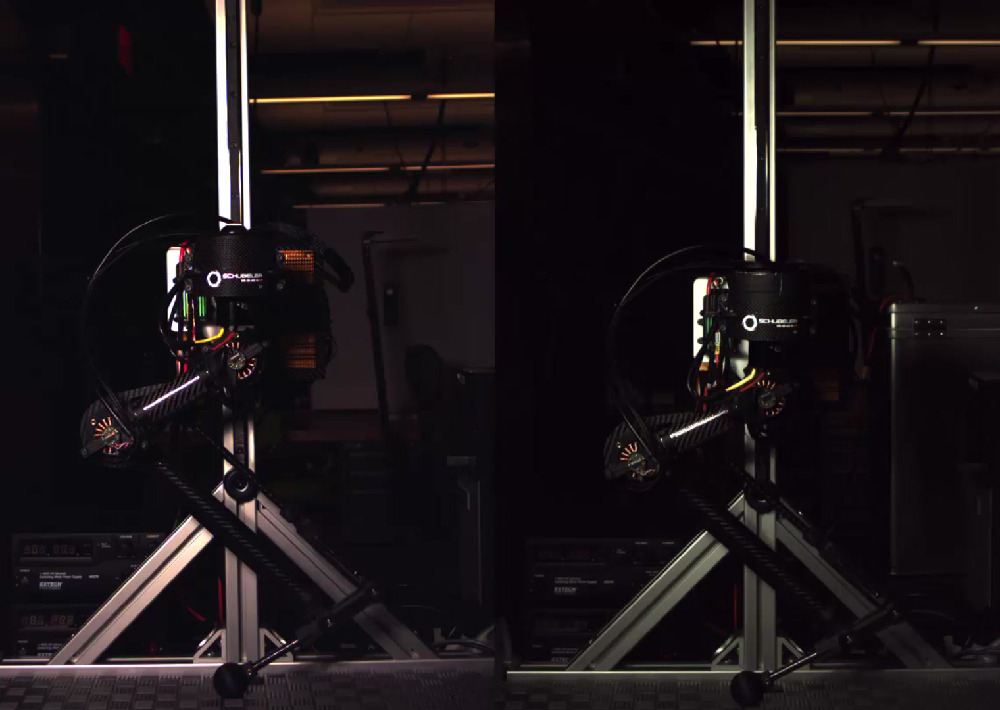
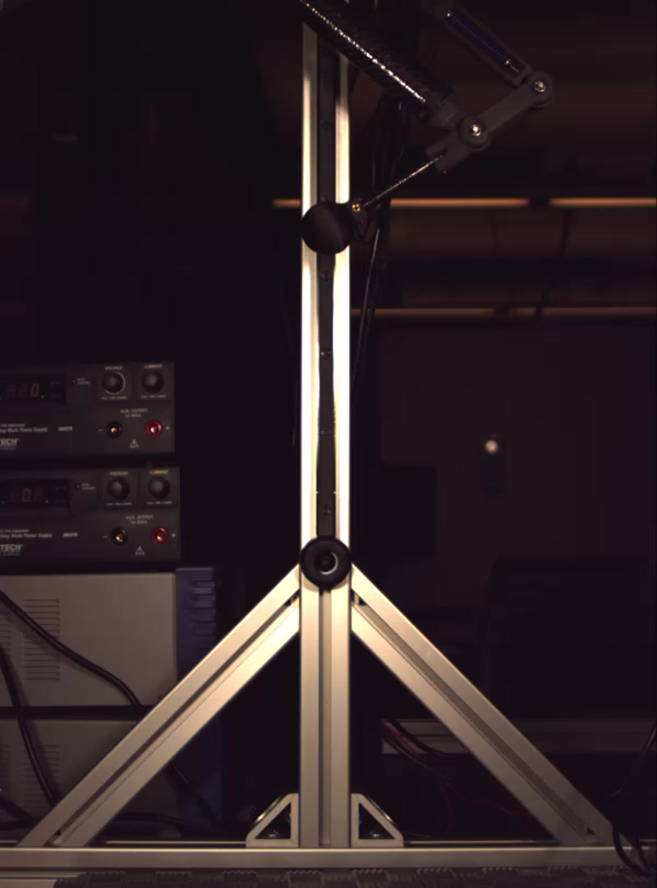

Robotics Research Platform
Harpy
A super-lightweight bipedal robot built to explore thruster-assisted locomotion, dynamic balance, and movement in reduced gravity.

Overview
Harpy was conceived as a hardware platform for developing complex control algorithms for thruster-assisted bipedal locomotion. The twin electric ducted fans can augment balance, improve walking stability, and add impulse for jumping over obstacles.
The platform also creates a practical way to study legged locomotion in reduced-gravity conditions. By using controlled thrust to offset a portion of the robot's weight, experiments can approximate lower effective gravity without changing the leg mechanism.
Architecture
Mass was treated as a system-level constraint.
Nearly every design decision was driven by the need to minimize weight while preserving stiffness and energy density. Carbon-fiber tubes, sandwich plates, composite 3D printing, and embedded bearings and carbon plates reduced part count while keeping the load paths direct.
Lightweight brushless motors are paired with compact Harmonic Drive component sets. The resulting actuators package high reduction and torque density into composite housings shaped around the robot rather than around conventional gearbox geometry.

Actuator Design
Compact transmission, integrated structure
The actuator housing carries bearings, transmission components, motor, and output structure in a tightly integrated assembly. Composite FDM enabled geometry that would be costly to machine while still supporting embedded high-load components.

Parametric Optimization
Designing around center of mass and inertia
A parametric model in Rhino and Grasshopper exposed actuator, thruster, drive, heatsink, battery, and geometry locations to an evolutionary solver. The solver compared each candidate against target center-of-mass and moment-of-inertia values.
Because hardware changes could be folded back into the model, the workflow remained useful as batteries, sensors, cameras, and other components evolved. Packaging decisions could be evaluated against the behavior of the entire machine instead of one component at a time.


Hardware Validation
From simulation to a restrained leg test
A t-slot fixture was designed for controlled drop and hop testing. The simplified single-leg setup isolated the sagittal mechanism while preserving the thruster actuator and EDF, making it possible to measure how assisted thrust changed required joint torque and jump performance.


Outcome
A mechanical foundation for control research
This work established the hardware architecture for Harpy: a compact experimental platform where structure, actuation, mass distribution, simulation, and testing were developed as one system. The resulting design supports continued work on dynamic, thruster-assisted bipedal control.